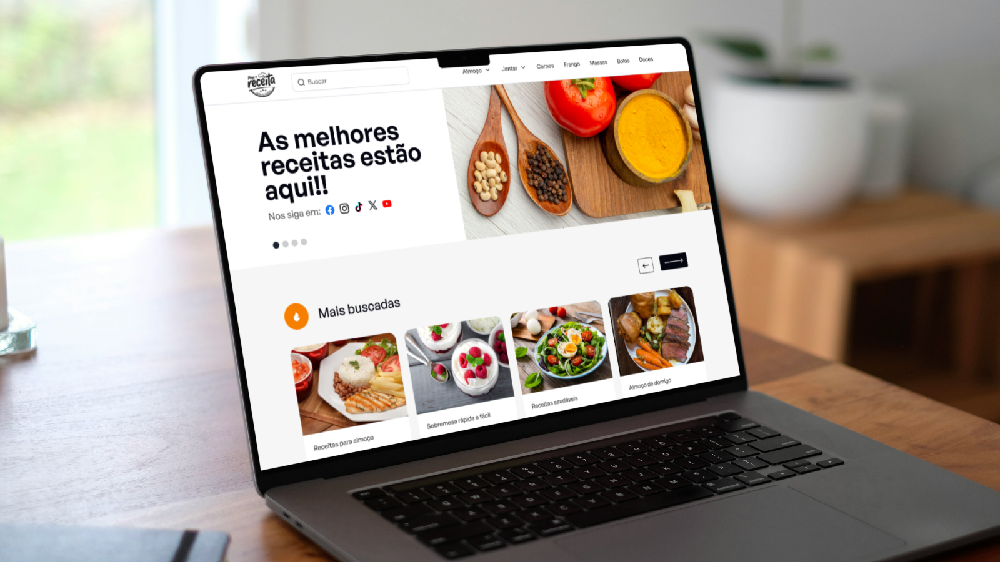
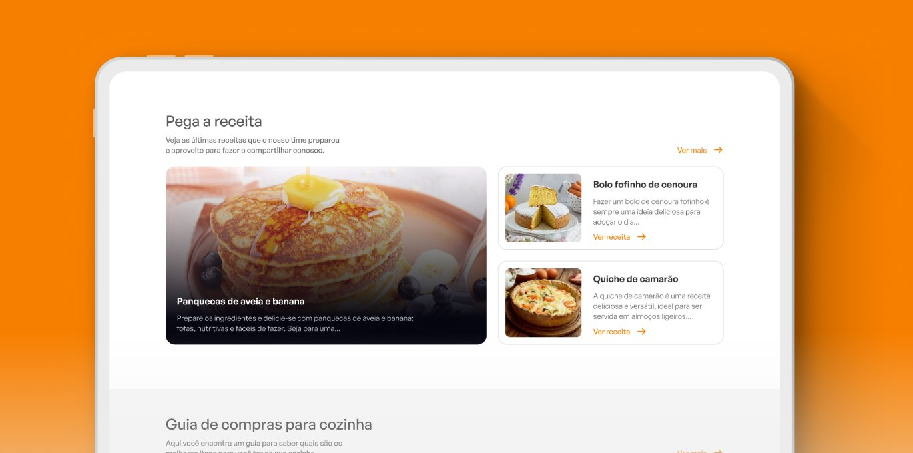
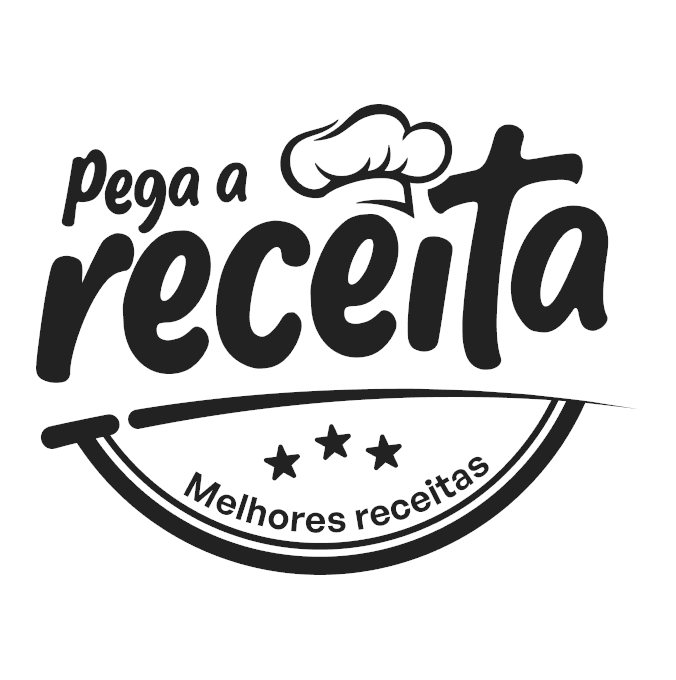
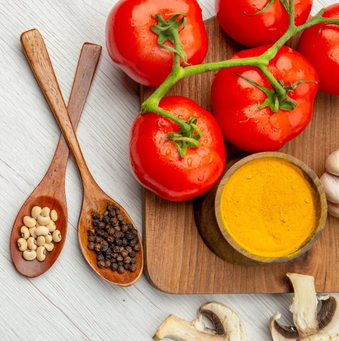
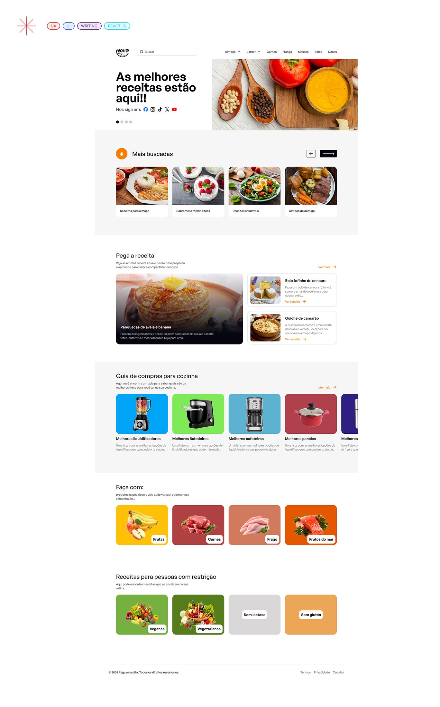
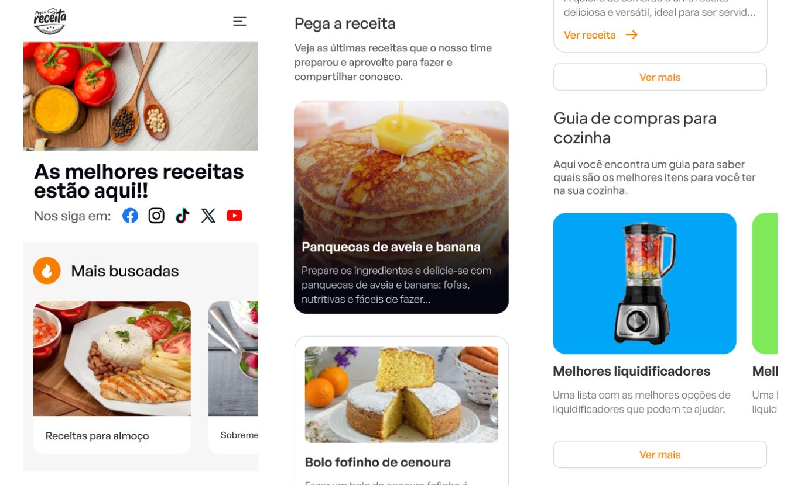

Pega a Receita
Pega a Receita é um case de site editorial pensado para descoberta rápida de receitas, leitura confortável e navegação objetiva. O sistema organiza o conteúdo em blocos claros para ajudar o usuário a sair da inspiração e chegar ao preparo com menos atrito.

Visão geral
Pega a Receita é um projeto de website responsivo criado para apresentar receitas de forma simples, visual e acessível. A proposta do projeto foi desenvolver uma experiência leve e intuitiva, onde o usuário consegue explorar receitas, entender os ingredientes e navegar pelo conteúdo sem esforço.


Desafio
O principal desafio foi transformar um catálogo de receitas em uma experiência digital agradável de explorar, com foco em hierarquia de conteúdo, navegação intuitiva e responsividade, sem perder o aspecto acolhedor e inspirador que o universo gastronômico pede.

Solução
A solução combinou uma estrutura de navegação simples, hierarquia visual bem definida e componentes responsivos para facilitar a descoberta e o consumo de conteúdo. O projeto priorizou escaneabilidade, organização das informações e uma experiência fluida entre desktop e mobile, transformando o site em uma plataforma mais funcional e convidativa.

Estrutura Responsiva
A responsividade foi tratada como parte central do projeto, não como adaptação posterior. Cada tela foi pensada para manter clareza, fluidez e conforto de uso em diferentes dispositivos, com layouts e componentes ajustados para oferecer uma experiência consistente do desktop ao mobile.

Resultados
Como resultado, o projeto evoluiu para uma experiência mais clara, funcional e agradável de explorar, com melhor estrutura de conteúdo, navegação fluida e consistência entre dispositivos. A solução elevou a qualidade da interface e traduziu o conceito do produto em uma experiência digital mais madura.